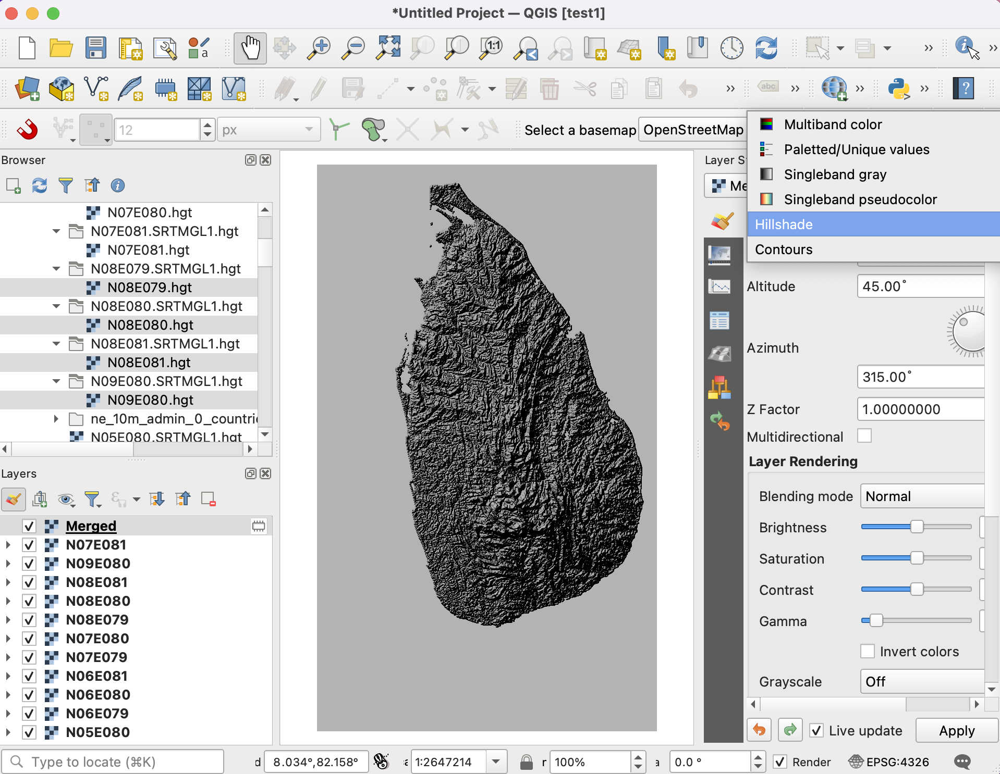

Arbeit mit Attributen (QGIS3)¶
GIS Daten bestehen aus zwei Teilen - Feature und Attribute. Attribute sind strukturierte Daten über jedes Feature. Dieses Tutorial zeigt, wie man sich die Attribute eines GIS Vektorlayers ansieht und einfache Abfragen mit ihnen in QGIS erstellen kann.
Überblick über die Aufgabe¶
The dataset for this tutorial contains information about populated places of the world. The task is to query and find all the capital cities in the World that have a population greater than 1 million and save the resulting subset as a GeoJSON file.
Weitere Fähigkeiten die wir erlernen¶
Selektion von Features eines Layers mit Hilfe von Ausdrücken.
Benutzung der Attributwerkzeugleiste.
Exporting selected features in a layer.
Beschaffung der Daten¶
Natural Earth provides a Populated Places dataset. Download the simple (less columns) dataset.
For convenience, you may directly download a copy of the dataset from the link below:
ne_10m_populated_places_simple.zip
Datenquelle [NATURALEARTH]
Arbeitsablauf¶
Gehe im QGIS Browser zur Datei
ne_10m_populated_places_simple.zipund erweitere sie. Wähle die Dateine_10m_populated_places_simple.shpund ziehe sie in den Arbeitsbereich.

Ein neuer Layer
ne_10m_populated_places_simplewird nun in QGIS geladen und wir sehen viele Pukte für die bewohnten Orte in der ganzen Welt. Die Arbeitsfläche in QGIS zeigt die Geometrie des GIS Layers. Jeder Punkt hat außerdem zugehörige Attribute, die wir uns jetzt ansehen. Gehe zur Attributwerkzeugleiste. Die Werkzeugleiste enthält viele Tools, um die Attribute von Layern zu untersuchen, anzusehen, auszuwählen oder zu verändern.

Bemerkung
If you do not see the toolbar, you can enable it from .
Klicke auf den Knopf Objekt abfragen in der Attributwerkzeugleiste. Klicke danach auf einen beliebigen Punkt im Arbeitsbereich. Die zum Punkt gehörenden Attribute werden nun im Fenster Abfrageergebnisse angezeigt. Nachdem wir mit dem Erkunden der Attribute einiger Punkte fertig sind, können wir auf den Knopf Schließen drücken.

Anstatt jeden Punkt einzeln anzusehen, können wir uns die Attribute aller Features auch auf einmal in einer Tabelle ansehen. Klicke auf den Knopf Attributtabelle öffnen in der Attributwerkzeugleiste. Man kann alternativ auch mit der rechten Maustaste auf den Layer
ne_10m_populated_places_simpleklicken und Attributtabelle öffnen wählen.

Wenn wir nach rechts scrollen, sehen wir die Spalte pop_max. Sie enthält die Bevölkerungsanzahl der Orte. Wenn wir doppelt auf den Spaltenkopf klicken, wird der Inhalt der Spalte absteigend geordnet gezeigt.

Jetzt können wir mit der Abfrage der Attribute beginnen. QGIS nutzt SQL-artige Ausdrücke zur Erstellung von Abfragen. Klicke auf den Knopf Objekte über Ausdruck wählen.

Im Fenster Select By Expression erweitern wir den Bereich Felder und Werte und klicken doppelt auf
pop_max. Wir sehen, dass das Attribut nun im Bereich Ausdruck angezeigt wird. Wenn man sich unsicher ist, welche Werte das Attribute enthält, kann auf den Knopf Alle eindeutigen klicken und die im Datensatz enthaltenen Attributwerte werden aufgelistet. Für diese Übung suchen wir alle Features mit einer Einwohnerzahl größer als 1 Million. Verwende den folgenden Ausdruck und klicke auf Objekt wählen und dann auf Schließen.
"pop_max" > 1000000
Bemerkung
Bei der QGIS Ausdrucksausführung werden doppelte Anführungszeichen für ein Feld und einfache Anführungszeichen für Werte im Textformat verwendet.
Wir sehen, dass jetzt einige Zeilen in der Attributtabelle ausgewählt sind. Die Beschriftung des Fensters hat sich ebenso verändert und zeigt jetzt die Anzahl der gewählten Features an.

Wir schließen die Attributtabelle und kehren zum QGIS Hauptfenster zurück. Wir sehen, dass einige der Punkte nun in gelb dargestellt werden. Das ist das Ergebnis unserer Abfrage. Alle Punkte mit einer Einwohnerzahl
pop_maxgrößer als1000000sind ausgewählt.

Wir wollen unsere Abfrage jetzt erweitern, so dass alle Hauptstädte mit einer Einwohnerzahl größer als 1 Million ausgewählt weden. Um einfach zum Ausdruckseditor zu kommen, können wir den Knopf Objekte über Ausdruck wählen in der Attributwerkzeugleiste verwenden.

The field containing data about capitals is adm0cap. The value
1indicates that the place is a capital. We can add this criteria to our previous expression using the and operator. Enter the expression as below and click Select Features and then Close.
"pop_max" > 1000000 and "adm0cap" = 1
Zurück im QGIS Hauptfenster sehen wir, dass nun weniger Punkte ausgewählt sind. Das ist das Ergebnis der angepassten Abfrage, die nur Hauptstädte mit einer Einwohnerzahl größer als 1 Million anzeigt.

Wir werden die selektierten Features jetzt als neuen Layer exportieren. Klicke mit der rechten Maustaste auf den Layer
ne_10m_populated_places_simpleund gehe zu .

Man kann das gewünschte Exportformat unter Format wählen. Für diese Übung wählen wir
GeoJSON. GeoJSON ist ein textbasiertes Format, das für Webmapping weit verbreitet ist. Klicke auf den Knopf … neben Dateiname und gebepopulated_capitals.geojsonals Ausgabedatei ein.

Der Eingangsdatensatz hat viele Attributspalten. Wir können nur einige der Spalten für den Export auswählen. Erweitere den Bereich Felder zum Export und deren Exportoptionen wählen. Klicke auf Alle abwählen und wähle die Spalten
nameundpop_max. Klicke auf OK.

Der neue Layer
populated_capitalswird nun in QGIS geladen. Wir können den Layerne_10m_populated_places_simpleausschalten, um den neuen exportieren Layer zu sehen.

If you want to give feedback or share your experience with this tutorial, please comment below. (requires GitHub account)